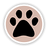

Hvad du skal vide inden du køber hvalp
Inden du beslutter dig for at købe hvalp, er det vigtigt at du tænker over følgende
- Sæt jer godt ind i racen. Det er en hund med en selvstændig personlighed og derfor responderer den ikke godt på hård tale og skæld ud.
- Eurasieren kan være reserveret overfor fremmede. Socialisering som hvalp er derfor betydningsfuld for, hvor imødekommende hunden bliver.
- Eurasieren kan udvise jalousi overfor et nyt spædbarn. Her kan socialisering med små og mindre børn sørge for at dette undgås.
- Eurasieren er ikke egnet til at bo i lejlighed uden have.
- Eurasieren kræver tid, hvis du er ung og under uddannelse så vent gerne et par år inden du køber hund.
- Overvej allerede nu, hvem der skal passe hunden, hvis I skal på ferie. Eurasieren knytter sig til sin egen familie, så det er vigtigt, at den bliver passet af en eller nogen som den kender i forvejen.
- En lille hvalp kræver mindst lige så meget arbejde som en baby.
- Eurasieren er en meget loyal familiehund, og en omplacering kan være meget hårdt for den. Anskaf dig kun en eurasier, hvis du ved at du har tænkt dig at beholde den for resten af livet.
Det lyder måske som om, at eurasieren stiller mange “krav”, men ser man bort fra dette så får man en ven for livet, som altid er med på sjov og den gør gerne en indsats for at få opmærksomhed om morgenen. Det er tilfældigt, hvorvidt hunden er vandglad eller ej.